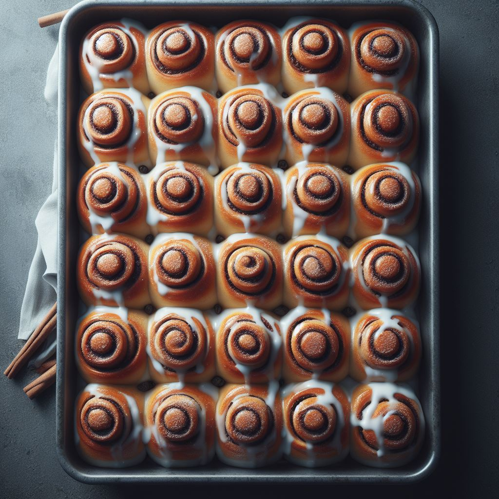

Protein Cinnamon Rolls
Calories: 324 calories per serving C:49gr P:14gr F:8gr
PREP TIME: 30mins COOK TIME: 10mins DIFFICULTY: Easy
Ingredients
- 40gr Oat Flour
- 35gr Tapioca Flour
- 20gr Vanilla Casein Protein Powder
- 2gr Baking Powder
- 80gr Low Fat Milk
- 30gr Egg Whites
- 10gr Butter - melted
- 20gr Sugar
- 5gr Cinnamon
- 30gr Whipped Cream Cheese Frosting
Instructions
- Set the oven to 204°C or prepare the air fryer.
- Combine the flours, baking powder, and protein powder in a bowl. Add the milk and egg whites and mix well to form a dough.
- Refrigerate the dough for 10-15 minutes to make it less sticky.
- Lay out two large sheets of wax paper and spray them with oil on both sides.
- Put the dough between the wax paper sheets and roll it into a ¼" thick rectangle.
- In a small bowl, stir the sugar and cinnamon together and melt the butter in a microwave.
- Brush the butter over the dough and sprinkle the cinnamon sugar on top.
- Cut the dough lengthwise into two equal strips.
- Using the wax paper, roll up each strip into a log. Then, join the two logs together by placing one at the end of the other and rolling them into one big log.
- Cut the log into two pieces to make two rolls.
- Grease a sheet pan, baking dish, or cast iron skillet with oil and place the rolls on it.
- Bake the rolls in the oven for 8-12 minutes or in the air fryer for 6 minutes, until they are lightly browned on top.
- Drizzle the frosting over the rolls. Enjoy your two large rolls.